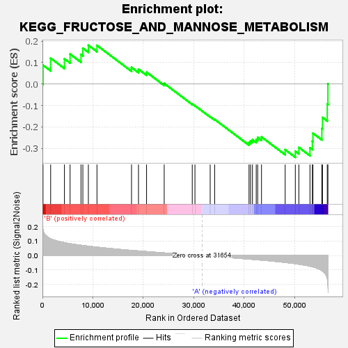
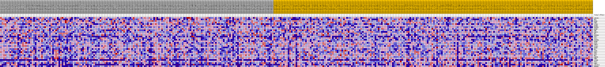
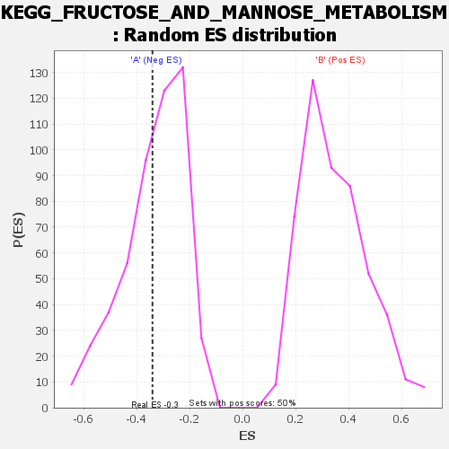

| | | Dataset | my.my.cls#B_versus_A.my.cls#B_versus_A_repos |
| Phenotype | my.cls#B_versus_A_repos |
| Upregulated in class | A |
| GeneSet | KEGG_FRUCTOSE_AND_MANNOSE_METABOLISM |
| Enrichment Score (ES) | -0.34093907 |
| Normalized Enrichment Score (NES) | -1.0155936 |
| Nominal p-value | 0.4047619 |
| FDR q-value | 0.64180905 |
| FWER p-Value | 0.998 |
Table: GSEA Results Summary

Fig 1: Enrichment plot: KEGG_FRUCTOSE_AND_MANNOSE_METABOLISM
Profile of the Running ES Score & Positions of GeneSet Members on the Rank Ordered List
| SYMBOL | TITLE | RANK IN GENE LIST | RANK METRIC SCORE | RUNNING ES | CORE ENRICHMENT | | 1 | AKR1B1 | na | 110 | 0.178 | 0.0880 | No |
| 2 | HK3 | na | 1625 | 0.117 | 0.1205 | No |
| 3 | PFKM | na | 4356 | 0.090 | 0.1176 | No |
| 4 | PMM1 | na | 5477 | 0.083 | 0.1397 | No |
| 5 | ALDOC | na | 7638 | 0.072 | 0.1378 | No |
| 6 | MTMR6 | na | 8005 | 0.070 | 0.1668 | No |
| 7 | PFKFB1 | na | 9102 | 0.066 | 0.1806 | No |
| 8 | MTMR2 | na | 10805 | 0.059 | 0.1802 | No |
| 9 | KHK | na | 17653 | 0.036 | 0.0774 | No |
| 10 | PHPT1 | na | 19033 | 0.032 | 0.0693 | No |
| 11 | HK1 | na | 20630 | 0.028 | 0.0552 | No |
| 12 | PFKFB3 | na | 24129 | 0.019 | 0.0028 | No |
| 13 | FBP2 | na | 29689 | 0.005 | -0.0930 | No |
| 14 | TPI1 | na | 30221 | 0.003 | -0.1006 | No |
| 15 | PFKFB4 | na | 33242 | -0.004 | -0.1521 | No |
| 16 | MTMR7 | na | 34130 | -0.006 | -0.1647 | No |
| 17 | PFKP | na | 40937 | -0.024 | -0.2729 | No |
| 18 | GMPPA | na | 41231 | -0.025 | -0.2656 | No |
| 19 | ALDOA | na | 41619 | -0.026 | -0.2594 | No |
| 20 | MTMR1 | na | 42367 | -0.028 | -0.2584 | No |
| 21 | HK2 | na | 42656 | -0.029 | -0.2488 | No |
| 22 | SORD | na | 43412 | -0.031 | -0.2464 | No |
| 23 | FBP1 | na | 48105 | -0.047 | -0.3055 | No |
| 24 | PFKL | na | 50114 | -0.056 | -0.3127 | Yes |
| 25 | MPI | na | 50818 | -0.060 | -0.2951 | Yes |
| 26 | GMPPB | na | 53019 | -0.073 | -0.2969 | Yes |
| 27 | PMM2 | na | 53493 | -0.077 | -0.2663 | Yes |
| 28 | ALDOB | na | 53608 | -0.078 | -0.2289 | Yes |
| 29 | FPGT | na | 55374 | -0.104 | -0.2075 | Yes |
| 30 | GMDS | na | 55501 | -0.107 | -0.1557 | Yes |
| 31 | AKR1B10 | na | 56447 | -0.158 | -0.0925 | Yes |
| 32 | PFKFB2 | na | 56575 | -0.189 | 0.0008 | Yes |
Table: GSEA details [plain text format]

Fig 2: KEGG_FRUCTOSE_AND_MANNOSE_METABOLISM
Blue-Pink O' Gram in the Space of the Analyzed GeneSet

Fig 3: KEGG_FRUCTOSE_AND_MANNOSE_METABOLISM: Random ES distribution
Gene set null distribution of ES for KEGG_FRUCTOSE_AND_MANNOSE_METABOLISM